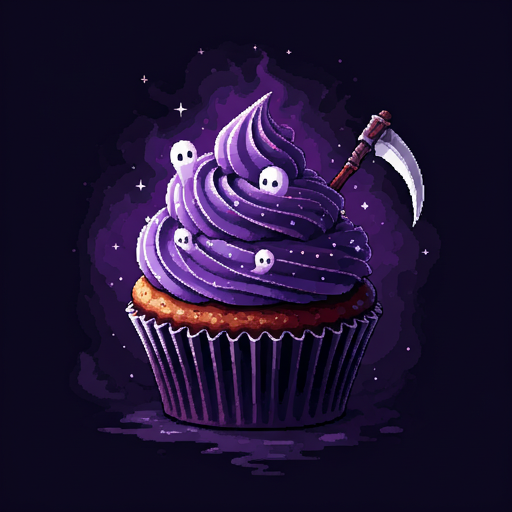

🖤 Grim's Death-liciously Dark Cupcakes 🖤

Description:
Experience true soul food with the Grim Reaper's signature cupcakes! These hauntingly delicious treats blend ethereal flavors with a touch of the supernatural.
Made with ethically sourced Soul Sugar and premium Miasma Flour, each bite is literally to die for. Perfect for midnight cravings, supernatural soirées, or when you're just feeling a bit deadly delightful. Don't worry – they're safe for mortals!
Yields: 13 cupcakes (never make a dozen, that's just asking for trouble!)
Back to Home
Ingredients:
- 2 cups Miasma Flour (store-bought or freshly harvested from ancient crypts)
- 1½ cups Soul Sugar (ethically sourced from willing spirits)
- 3 Phantom Eggs (laid by spectral chickens at midnight)
- ½ cup Reaper's Tears (collected during sad movies)
- 1 cup Haunted Heavy Cream (from ghost cows, obviously)
- 2 tsp Graveyard Dust (for that earthy finish)
- 1 tbsp Essence of Night
- A pinch of Banshee's Breath (for extra fluffiness)
For the Frosting:
- 2 cups Shadowspun Butter
- 3 cups Powdered Spirit Sugar
- 1 tsp Vanilla Extract (from the rarest orchids)
- 1 tsp Moonlight Extract
- ½ cup Void Chocolate (72% dark, obviously)
Instructions:
- Preheat your cauldron to 180°C (or the temperature of a lukewarm spirit).
- In a cursed mixing bowl, sift together the Miasma Flour and Graveyard Dust. Set aside while whispering gentle incantations.
- In a separate bowl, cream together Soul Sugar and Shadowspun Butter until the mixture is as pale as a ghost.
- Add Phantom Eggs one at a time, mixing well after each addition. Don't worry if you hear faint clucking sounds - that's normal.
- Slowly fold in your flour mixture, alternating with Haunted Heavy Cream. The batter should be smooth as a freshly polished tombstone.
- Fill cupcake liners (preferably purple) about 2/3 full.
- Bake for 18-20 minutes or until a bone pick inserted comes out clean.
For the Frosting:
Beat all frosting ingredients until light and fluffy as morning mist. Pipe onto cooled cupcakes using a #666 tip.
Serving Suggestion:
Best served at midnight under a full moon. Keeps for 3-5 days in a sealed crypt container.
WARNING: May cause temporary ghosting (side effects include floating, transparency, and an inexplicable desire to say "boo"). Perfect for both the living and the dead!